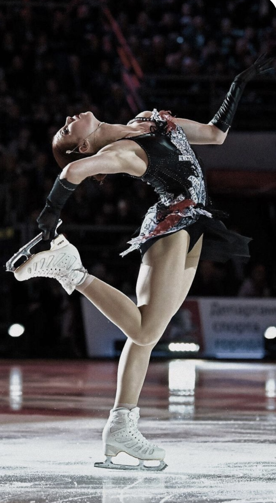

As students we spend most of our time on school.
Going to lectures and taking notes, studying for quizzes and test , or trying yo catch up with your classes.
It can be hard sometimes to find time for yourself,however;
having different intrests seperate from school helps a person in various ways.
Two of the hobbies i follow are reading and wome's figure sakting.
I wanted to introduce these hobbies so maybe you could find them intresting the way i do.
Figure Skating
Figure skating has four main categories of competition, ice dancing, pairs, and singles for both men and women.
Women's figure skating or ladies' single is a very competitive sport.
The countries with the biggest athletes are U.S, Russia, and Japan.
In the recent yeasr the sport has transformed becuase of "The quead revolution" happening in the women's single.
Jumping quds was something rare and almost miraculos
but now girls as young as 13 or 14 are doing these jumps annd breaking records everyday.
Triple axel and quad jumps are very difficult to perform
because of the strength the athletes need inorder to lift themselves off the ice.
Additionally, they need imensse amount of speed
to be able to do multiple rotations before hitting the ground.
My personal favorite is Alexandra Trusova
mainly because her attitude and passion toward the sport

img-1 Alexandra Trusovaimg-1 Alexandra Trusova
Reading
Incomparision to figure sakting reading is such a vast ocean.
Different people have different tast in what genre of books they enjoy.
Some people strictly read one genre of book like classic litreture or fantasy.
Others are more flexable with what they read and try different genres,
and lastly there is a vast majority of people who dont really enjoy reading for fun.
I think its mostly becuase of the conditions that usually force people to read, school.
It's really not reading because most of teh times ist studying
and they are completly different things.
Although i enjoy many genres like mystery, thrillers, and history
my personal favorites are YA and high fantasy in addition to new adult books.
I used to read few books a year but last year I really got back to reading.
Because I didnt follow new releases there were so amny books that appealed to me.
I read about 100 books last year but my favorite was Calloway siter series.
The story follows two addicts who pretent to be in a relationship inorder to hide their addictions from their families.
Down below are the reading order of the series + a link to their website.